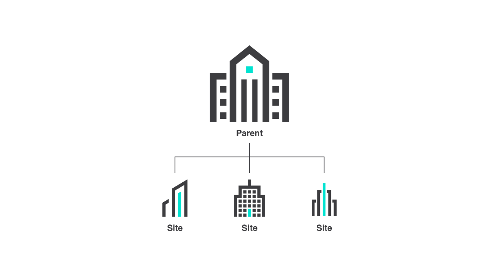
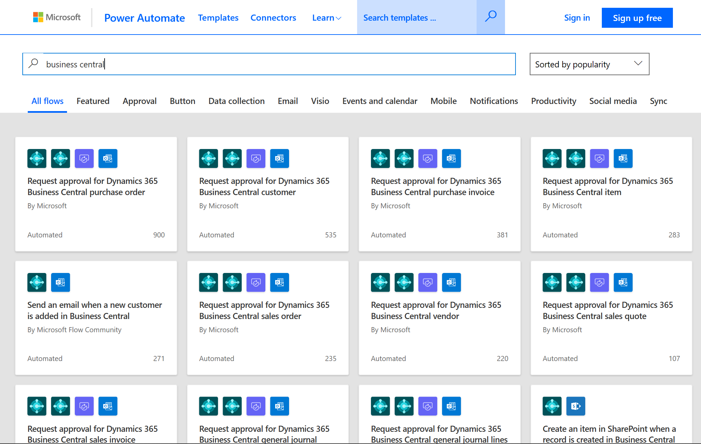

Business Central für Unternehmen mit mehreren Standorten und internationale Organisationen
Organisationen mit mehreren Standorten verwenden häufig ein Hub-and-Spoke-Geschäftsmodell, bei dem eine übergeordnete Firma oder die Zentrale die gesamten Vorgänge des Unternehmens verwaltet, während jeder Standort als einzelne, unabhängige Entität fungiert. Die Standorte sind oft geografisch verteilt und haben unterschiedliche Anforderungen an den Informationsaustausch mit der Firma in der Zentrale. Außerdem benötigen die Standorte in der Regel nicht den gleichen Grad an Komplexität und haben oft nicht die Ressourcen, um ein großes System zu pflegen.
Business Central bietet kleinen und mittelständischen Unternehmen eine betriebswirtschaftliche Lösung, die einfach zu bedienen und kostengünstig zu warten ist.
In diesem Artikel werden einige der Möglichkeiten vorgestellt, wie Business Central ein Hub-and-Spoke-Geschäftsmodell unterstützt.
Integration der Firma in der Zentrale und der Standorte
Business Central kann in das Buchhaltungssystem der Hauptfirma integriert werden und gleichzeitig die unterschiedlichen Anforderungen der verschiedenen Standorte erfüllen, unabhängig von Größe, Lagerplatz oder Art des Geschäfts.
Das folgende Diagramm ist ein Beispiel für die Integration verschiedener Standorte mit einer Firma in der Zentrale.

Erfüllen Sie die Bedürfnisse von inländischen und internationalen Standorten
Die geschäftlichen Anforderungen der Standorte unterscheiden sich oft aufgrund ihrer Branche, ihrer Geschäftsmethoden oder ihrer Beziehung zur Firma in der Zentrale. Business Central kann leicht für verschiedene Arten von Unternehmen und Standorten angepasst und erweitert werden. Microsoft AppSource bietet eine Fülle von Apps von Microsoft und unseren Partnern, und Partner können Business Central schnell und mit minimaler Unterbrechung des täglichen Vorgangs bereitstellen.
Für multinationale Unternehmen unterstützt Business Central die lokalen rechtlichen Anforderungen und Geschäftspraktiken.
- Für Onlineversionen gibt es mehr als 40 lokalisierte Länder-/Regionsversionen, die Sie als Erweiterungen von Microsoft AppSource installieren können.
- Für lokale Versionen sind Länder-/Regionsversionen entweder als von Microsoft lokalisierte Versionen oder als von Partnern betriebene Zusatzlokalisierungen verfügbar.
Ein Netzwerk von mehr als 4.000 Microsoft-Partnern weltweit sorgt für lokale Expertise.
| Business-Anforderung | Wie Business Central sie unterstützt | Mehr erfahren |
|---|---|---|
| Schneiden Sie das System auf Ihr Unternehmen zu. | Profitieren Sie von einem System, das von Anfang an für mittelständische Unternehmen konzipiert wurde. | Übersicht |
| Erfüllen Sie gesetzliche Vorschriften und lokale Praktiken. | Erfüllen Sie die lokalen gesetzlichen Anforderungen und Geschäftspraktiken. | Lokale Funktionalität |
| Greifen Sie auf mehrere Firmen von einer einzigen Seite aus zu. | Erhalten Sie schnellen Zugriff auf jede Business Central Firma in Ihrem Unternehmen. | Unternehmens-Hub |
| Verarbeiten Sie mehrere Sprachen und Währungen. | Die Unterstützung für mehrere Sprachen und Währungen hilft, lokale Anforderungen zu erfüllen. | Mehrsprachige Funktionalitäten Mehrere Funktionalitäten für mehrere Währungen |
Finanzdaten konsolidieren
Ein zentraler Aspekt des Hub-and-Spoke-Geschäftsmodells ist die Möglichkeit für die Firma in der Zentrale und die Standorte, Finanzdaten auszutauschen, auch wenn die Firma in der Zentrale und die Standorte unterschiedliche Systeme, Buchhaltungsstrukturen, Sprachen und Währungen verwenden.
| Business-Anforderung | Wie Business Central sie unterstützt | Mehr erfahren |
|---|---|---|
| Konsolidieren Sie Finanzdaten von Standorten. | Konsolidieren Sie die Finanzdaten von Standorten, unabhängig davon, ob sie Business Central oder eine andere Anwendung ausführen, zu einer einzigen Entität (Firma). | Konsolidieren von Finanzdaten aus mehreren Unternehmen |
| Integrieren Sie Buchhaltungsstrukturen. | Übertragen Sie Konsolidierungsdaten aus verschiedenen Buchhaltungsstrukturen in Ihre eigene. Integriertes Dateiformat für F&O (verfügbar mit Wave 2, 2020) | Importieren von Geschäftsdaten aus anderen Finanzsystemen Hauptbuchkonten für die Konsolidierung vorbereiten |
| Führen Sie Transaktionen in mehreren Währungen durch. | Helfen Sie dabei, dass Abschlüsse in verschiedenen Währungen genau sind und korrekte Wechselkurse verwenden. | Währungswechselkurse aktualisieren |
Teilen Sie Business Insights mit integrierten Analysen
Richten Sie die Organisation auf Ihre Geschäftsziele aus, indem Sie ein allgemeines Verständnis der aktuellen Realität schaffen. Integrierte Analysen können dazu beitragen, dass alle Mitarbeiter ihre Entscheidungen auf der Grundlage der gleichen Faktenlage treffen.
| Business-Anforderung | Wie Business Central sie unterstützt | Mehr erfahren |
|---|---|---|
| Teilen Sie Insights mit Standorten ohne umfangreiche IT-Unterstützung. | Erstellen Sie KPIs und Business Intelligence Dashboards in Power BI auf der Basis Ihrer Daten. | Von der lokalen Business Central-Version eine Verbindung mit Power BI herstellen |
| Entwickeln Sie angepasste Finanzberichte. | Generieren Sie parameterbasierte Finanzberichte. | Business Intelligence |
| Orientieren Sie sich an den Fakten. | Generieren Sie Berichte, zeigen Sie sie an und teilen Sie sie mit internen und externen Beteiligten. | Finanzberichte |
| Analysieren Sie Daten in Excel. | Finden Sie Fakten, beheben Sie Probleme und führen Sie Ad-hoc-Analysen in Microsoft Excel durch. | Analysieren von Finanzberichten in Excel |
Daten mithilfe von APIs und XMLports austauschen
APIs und XMLports vereinfachen den Prozess der Verbindung von Instanzen von Business Central, einschließlich derjenigen, die für jeden Standort angepasst wurden.
| Business-Anforderung | Wie Business Central sie unterstützt | Mehr erfahren |
|---|---|---|
| Verbinden Sie angepasste Versionen zwischen Standorten und der Firma in der Zentrale. | API-Seiten können jede Darstellung einer Entität offenlegen, einschließlich ihrer Anpassungen. | Aktivieren von APIs für Business Central |
| Versionsverwaltung und Sicherheit. | Die APIs verwenden ODataV4, das Versionsverwaltung, Webhooks und Änderungsverfolgung bietet. | Sicherheit und Schutz |
| Posten und Importieren von XML-Dokumenten. | Codeunits können als ungebundene Aktionen ausgesetzt werden, um das Posten und Einbinden von XML-Dokumenten zu unterstützen. Zum Verarbeiten von XML-Dokumenten können XMLports verwendet werden. Ungebundene Aktionen sind auch in der Lage, ein XML- oder JSON-Dokument zu erzeugen. | XMLport-Objekte |
| Erleichtern Sie die Wartung durch elektronischen Datenaustausch. | Eine Lösung für den elektronischen Datenaustausch kann hinzugefügt werden, um als Integrationsschicht zwischen der Firma in der Zentrale und den Standorten zu dienen. | Data Exchange Framework |
| Tauschen Sie Daten zwischen verschiedenen Systemen aus. | Verwenden Sie XMLports, um XML-Dokumente zu erstellen, die dann zwischen einer Firma in der Zentrale, die ein System verwendet, und Standorten, die Business Central verwenden, ausgetauscht werden können. | XMLport-Übersicht |
| Orchestrieren Sie komplexen Datenaustausch. | Verwenden Sie eine Kombination aus XMLports mit Business Central und Microsoft BizTalk Server, um die speziellen Anforderungen an Ihren Standorten zu erfüllen. Verwenden Sie für komplexe Anforderungen eine Lösung für den elektronischen Datenaustausch auf Basis von BizTalk Server und Commerce Gateway in Business Central in Kombination mit den XMLports. |
Arbeiten mit Berichten, Batchaufträgen und XMLports |
| Verbinden Sie sich mit Lösungen und Diensten von Drittanbietern. | APIs stellen eine Punkt-zu-Punkt-Verbindung zwischen Business Central und Lösungen und Diensten von Drittparteien her. | API v2.0 |
Fördern Sie eine effiziente Intercompany-Lieferkette
Standorte benötigen oft Zugriff auf die Lieferkette und die Möglichkeit, bestimmte Aspekte dieser Kette zu verwalten. Zum Beispiel könnten Standorte denselben Kreditor verwenden, aber ihre Anlagen und physischen Lagerplätze separat verwalten.
| Business-Anforderung | Wie Business Central sie unterstützt | Mehr erfahren |
|---|---|---|
| Behandeln Sie bereichsübergreifende Transaktionen wie normale Verkaufs- und Kauf-Transaktionen. | Verwenden Sie firmenübergreifende Buchungen, um Verkaufs- und Kaufbelege sowie Hauptbucheinträge für ganze Workflows zu erstellen, und zwar für mehrere Firmen gleichzeitig, um doppelte Dateneingaben zu vermeiden. | Verwaltung von firmenübergreifenden Transaktionen |
| Verwenden Sie papierlose Prozesse. | Vermeiden Sie die Kalkulation für das Senden, Empfangen und Drucken von Dokumenten. | Eingehende Belege Verwalten von Anhängen, Links und Notizen zu Karten und Dokumenten |
Reagieren Sie schnell auf neue Geschäftsbedingungen
Die Firma in der Zentrale muss in der Lage sein, schnell auf geschäftliche Veränderungen an jedem Standort zu reagieren. In Kombination mit Power Automate kann Business Central als Frühwarnmechanismus dienen.

| Business-Anforderung | Wie Business Central sie unterstützt | Mehr erfahren |
|---|---|---|
| Automatisch E-Mail-Warnungen generieren. | Legen Sie in Power Automate Alarme fest, die E-Mails generieren, um Sie über kritische Geschäftsbedingungen an Standorten oder Partnern in der Lieferkette zu informieren. | Business Central und Power BI |
| Verwenden Sie Standard- oder angepasste Alarme. | Verwenden Sie 12 verschiedene Vorlagen, die für Business Central mitgeliefert werden, oder legen Sie Ihre eigenen Alarme fest, die zu Ihrem Unternehmen passen. | Business Central in einem automatisierten Workflow verwenden |
Weitere Informationen
Verwaltung von Business Central Online
Arbeiten mit Business Central
Kostenlose E-Learning-Module für Business Central finden Sie hier